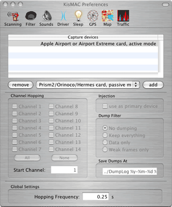
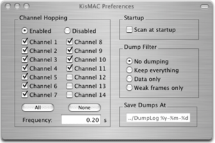

| KisMAC Manual - Getting started with KisMAC |
Before you can begin using KisMAC you must open the preferences and select a driver to use for your specific wireless card.
- Open the preferences from the KisMAC menu and click on the Driver icon.

Note: Each of these drivers will prevent you from using your wireless
card to access a network while KisMAC is running, however KisMAC
must use one of these drivers to scan for networks. For more information
about driver capabilities, see the expanded driver section later in this manual.
- There are six different drivers to choose from.
- The first is the Apple Airport or Airport Extreme card, which operates in active mode. This means that you can still use your wireless card, but you will not have full functionality when using KisMAC. This is the driver you want to use if you have an Apple branded Airport card and all you want to do is search for networks. If you have a Apple Airport, or an Apple Airport extreme card and would like to operate it in active mode, choose this driver.
- The second driver is for the Apple Airport card, passive mode. You will not be able to access any networks while in passive mode, but you will have expanded capabilities in KisMAC. This driver does not work with Airport Extreme cards. If you have an Apple Airport card, and you want to operate it in passive mode, choose this driver.
- The third driver is for Prism2/Orinoco/Hermes cards. It operates only in passive mode. If you have a Prism2, an Orinoco, or a Hermes card, choose this driver.
- The fourth driver is for Cisco Aironet cards. It operates only in passive mode. If you have a Cisco Aironet card, choose this driver.
- The fifth driver is for if you have a USB wireless adapter with a Prism2 chipset. It operates only in passive mode. If you have a USB device with a Prism2 chipset, choose this driver.
- The sixth driver is for Atheros based cards. It operates only in passive mode. If you have a Atheros based card, choose this driver.
- Your password will be asked for each time you start KisMAC because the drivers must be loaded and unloaded.
If you would like KisMAC to load the drivers without asking for your password, check the Make scripts SUID root checkbox.
You can also use the KisMAC Driver Tool, installed with KisMAC, to start or stop the drivers.
After selecting a driver, you can now use KisMAC to scan for networks by clicking on the scan button in the main window. It is recommended however, that you go through all of the preferences in order to get the best KisMAC experience.
Scanning Preferences
- WI-FI networks have 11 possible channels (14 non-us, 13 in Europe). A typical access point will be available
on 3 channels a time, since these channels actually overlap. In order to detect all networks, KisMAC will make
the wireless card "hop" between all selected channels. The frequency field changes how often KisMAC changes channels.
Before you select channel 12-14 please make sure your card can use this channels, otherwise strange side effects might occur.

- Once you find a network that you want to monitor, it is recommended that you only select the channel the
network uses in order to capture more data from that network. Note: Cisco Aironet cards perform hopping internally
and the settings will be disabled when using one of these cards.
- If you would like KisMAC to automatically scan for networks as soon as it starts, check the scan at startup checkbox.
Note: Unless you have an alternative network connection, selecting this option will prevent you from downloading maps
from the Internet. See the GPS chapter for more information.
- The dump filter settings will tell KisMAC to create a PCAP file with the following filtering options:
- The default setting is no dumping, KisMAC simply discards the data.
- Keep everything - All intercepted traffic is written to the log file.
- Data only - Only packets containing data are written to the log file; empty, "I'm here," traffic is ignored, but any packets with weak initialization vectors (IVs) will be logged.
- Weak frames only - only packets with weak initialization vectors will be written to the log file.
Sound Preferences
- KisMAC can be set to play different sounds when different types of networks have been detected.
This can be helpful for war driving when you might not be able to look at the computer screen.
- WEP enabled network: play the selected sound when an encrypted network is detected.
- WEP disabled network: play this sound when an open network is detected
- Play every x packets: This option is useful when to gathering data to attempt to crack a network. Alerts you when a certain amount of data has been collected. See the cracking chapter later in this manual.
- Optionally, KisMAC can speak the names (SSID) of detected networks, also useful while war driving.
These are the basic preferences needed, in order to get started with KisMAC. There are many more advanced features that are covered in depth in their own chapters of the manual.
Table of common card brands:
| Manufacturer | Model | Chipset | Compatibility |
| 3Com | 3CRWE154G72 | PrismGT | |
| Addtron | AWP-100 | PrismII | |
| AWP-101 | PrismII | ||
| Apple | Airport | Hermes | Verified |
| Airport Extreme | Broadcom | works in active mode | |
| Asanté | AL1011 | PrismII | |
| Belkin | F5D6020 (old) | PrismII | |
| F5D7010 | Broadcom | ||
| Buffalo | WLI-CB-G54 | Broadcom | |
| Cisco | AIR-PCM35x | Aironet | Verified |
| AIR-LMC35x | Aironet | ||
| Compaq | WL-100 | PrismII | Verified |
| D-Link | DWL-650 (old) | PrismII | Verified |
| DWL-G520 | Atheros | ||
| LinkSys | WPC11 | PrismII | |
| WPC54G | Broadcom | ||
| Proxim | Orinoco 11b/g | Atheros | Verified |
| Lucent | Orinoco Silver 11Mbit | Hermes | Verified |
| Orinoco Silver 2Mbit | Hermes | Verified | |
| Orinoco Gold 11Mbit | Hermes | ||
| Netgear | MA401 | PrismII | |
| WG511 | PrismGT | ||
| WG511T | Atheros | ||
| SMC | SMC2632W (old) | PrismII | |
| ZCOMAX | XI-300 | PrismII | |
| XI-815 | PrismII | ||
| Zoom | 4105 | PrismII | |
|
The Aironet, Atheros, PrismII and Hermes chips are natively supported by KisMAC. The Broadcom chipset is supported over the Airport Extreme driver only in limited mode. All other chipsets are currently unsupported. | |||
| back | Tell me more |